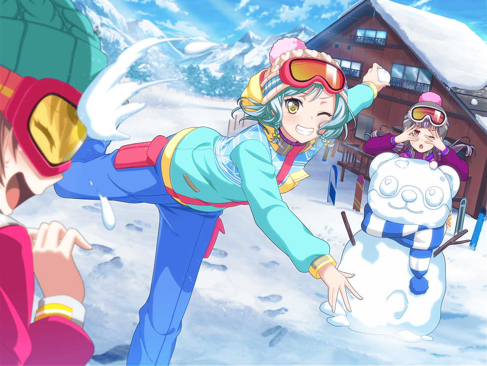

ゲレンデ 雪遊び広場
日菜
ねえねえ、ちょっと休憩しない？ あたし、滑り疲れちゃったよ
あこ・はぐみ
さんせー！
日菜
ちょっとお腹減ったし、ロッジで何か食べるー？
あこ
あこもお腹減った！
はぐみ
あ、ねえこれ見て！ 青空カレーだって！
あこ
青空カレー！ ……って何？
日菜
空みたいに青いカレーじゃないの？
はぐみ
おいしいのかな？
あこ
あ、違うみたい！ 青空の下で食べるカレーだって！
日菜
なーんだ、そっちか〜。ま、いいや！ それ食べる？
はぐみ
トッピングも色々あるみたい！
あこ
ホントだー！
ハンバーグ、コロッケ、エビフライ、チーズ……
種類めっちゃある！
日菜
あたしはハンバーグをトッピングしよっかな〜
あこ
あこはエビフライとチーズ！
はぐみ
じゃあ、はぐみは全部！
あこ・日菜
全部！？
あこ
じゃあ、あこも全部にする！！
日菜
えー？ じゃあ、あたしも全部乗せいっちゃおっかな〜♪
はぐみ
オッケーだよ！ すみませ〜ん！
はぐみ
雪の上でカレー食べるなんて、はぐみ初めてだよ！
あこ
あこも！ っていうか、このカレーめっちゃおいしい！
日菜
あたしはもうちょっと辛いほうが好きだけどね〜
はぐみ
はぐみはちょうどいい！
あこ
このコロッケ、はぐみ的にはどう！？ おいしい！？
はぐみ
うんっ！ おいしいよ！
あこ
ホント！？ お肉屋さんが言うなら間違いないねっ！
日菜
ていうか、トッピングが多すぎて、
ご飯が足りなくなりそうじゃない？
はぐみ
じゃあ雪でカレー食べようよ！
ご飯と同じ色だし、代わりになると思う！
日菜
それ、面白そうかも。
ご飯がなくなったらやってみよーっと♪
はぐみ
それにしても、全然なくならないね、このカレー！
あこ
トッピング全部乗せしてるんだもん、当たり前だよっ！
日菜
でもおいしいし、全然いけるんじゃない？
はぐみ
はぐみは余裕だよ！
あこ
よーし、あこもどんどん食べるぞー！
日菜・あこ・はぐみ
………………
日菜
はぐみちゃん……
はぐみ
へ、なあに……？
日菜
コロッケ好きでしょ、あげる
はぐみ
はぐみ、いつもコロッケ食べてるからいい
日菜
じゃあ、ハンバーグ
はぐみ
はぐみの家、お肉屋さんだからハンバーグ食べ飽きてるんだ
日菜
はぐみちゃん、もしかしてお腹いっぱいなんじゃないの？
はぐみ
そ、そんなことないよ！？
日菜
じゃあエビフライ
はぐみ
エビフライ？ エビフライ……うん、もらうね
あこ
ひなちん、エビフライがなくなっちゃって
寂しいと思うから、あこのコロッケあげるね
日菜
あたし、揚げ物はあんまり好きじゃないんだよね。
今思い出したけど
あこ
じゃあハンバーグあげる
日菜
あ……うん、ありがと
はぐみ
あこちん、コロッケあげる
あこ
あこ、いらないよ
はぐみ
このコロッケおいしいから、一緒に食べようよ
あこ
あこも食べるから大丈夫
はぐみ
もっと食べてほしいんだー
あこ
あ……うん、じゃあ……
日菜
それにしても、このカレー全然お皿の底が見えてこないね
あこ
うん、さっきから食べても食べてもカレーだよ……
日菜
はあ……全部乗せなんてやらなければよかった
はぐみ
でも、残したらもったいないし、がんばって食べよっ
日菜・あこ
はーい……